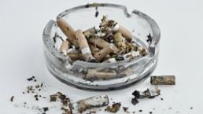
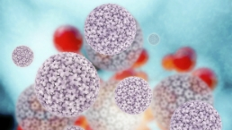

home
Cancer
History
cancer center
statistic
facts
causes
factors
Stages of cancer
Stage 1-4
FAQ
Contact
References
Causes of Cancer

Smoking is the most important preventable cause of cancer in the world.
Obesity is the second biggest preventable cause of cancer after smoking.
Overexposure to ultraviolet (UV) light from the sun or sunbeds is the main cause of skin cancer.
Eating a healthy balanced diet can play an important role in reducing your risk of cancer.
Around 3,400 cases of cancer in the UK each year could be prevented by keeping active.
The less alcohol a person takes, the lower the risk of cancer for owing.

You can’t catch cancer, but some infections such as HPV can increase your risk.
Hoaxes, myths and unanswered questions about cancer.
Although exposure to air pollution can be linked to cancer, for a person in the UK the risk is fairly low.
Some jobs can affect people’s risk of cancer, or may have done in the past.
Some inherited faulty genes can increase your risk of cancer.
Although cancer can occur at any age, it is much more common in older people.